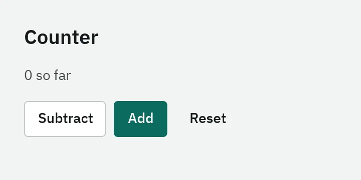
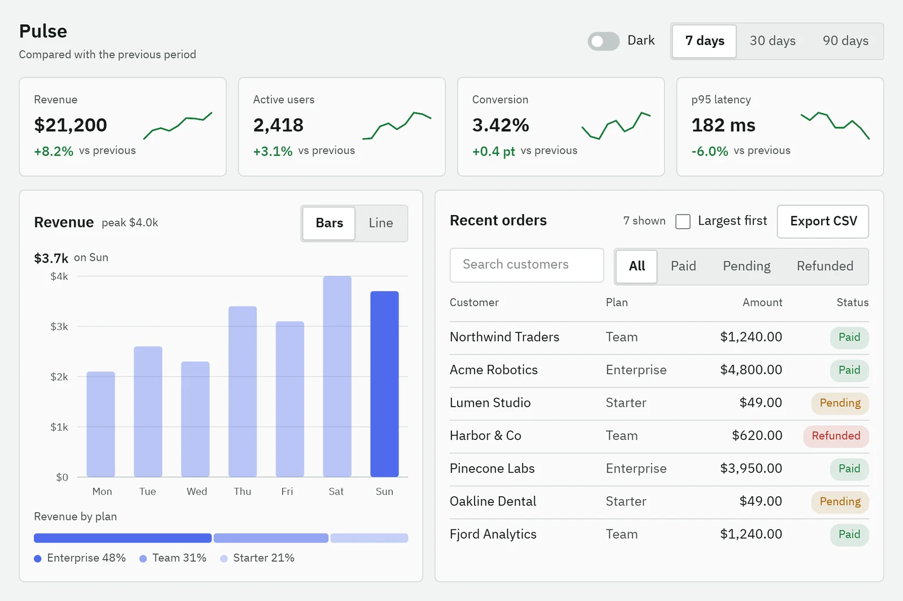
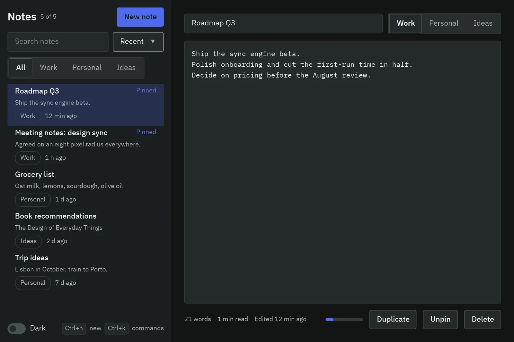
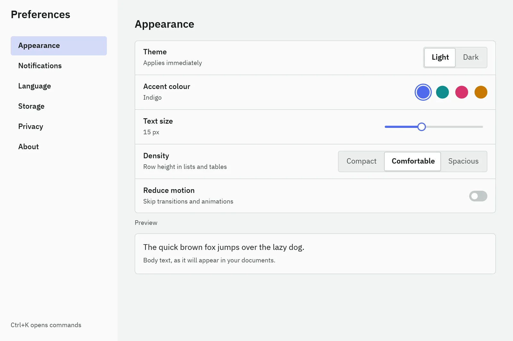
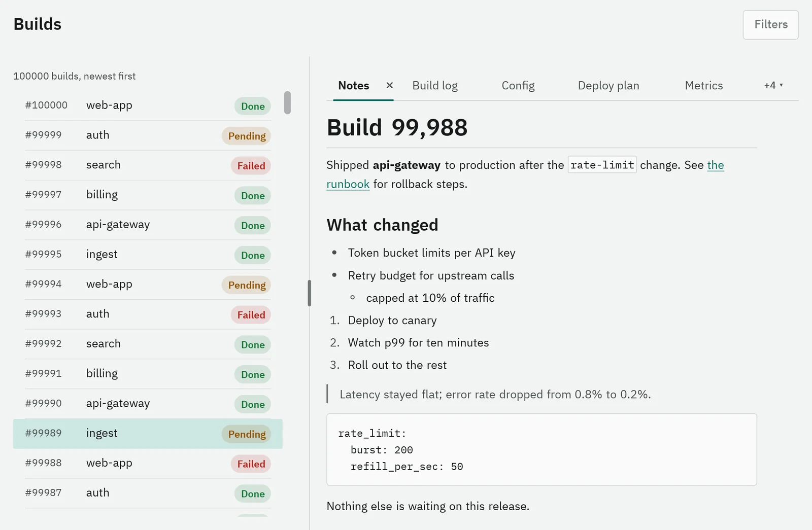
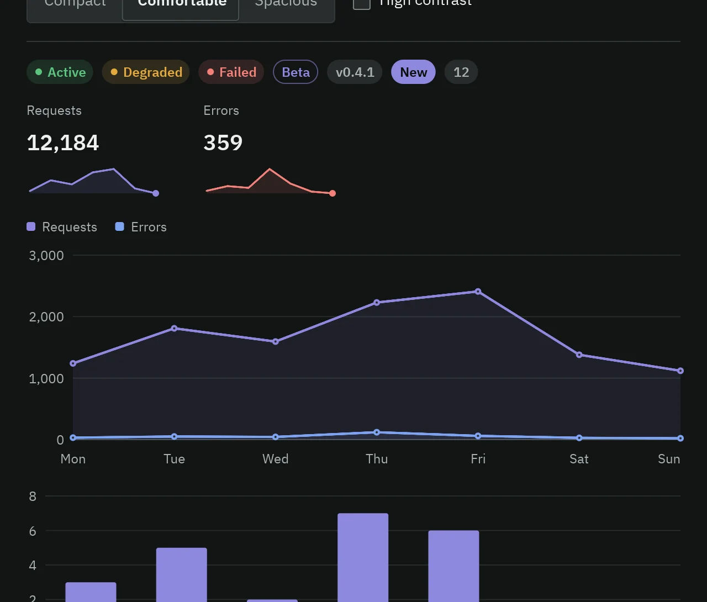
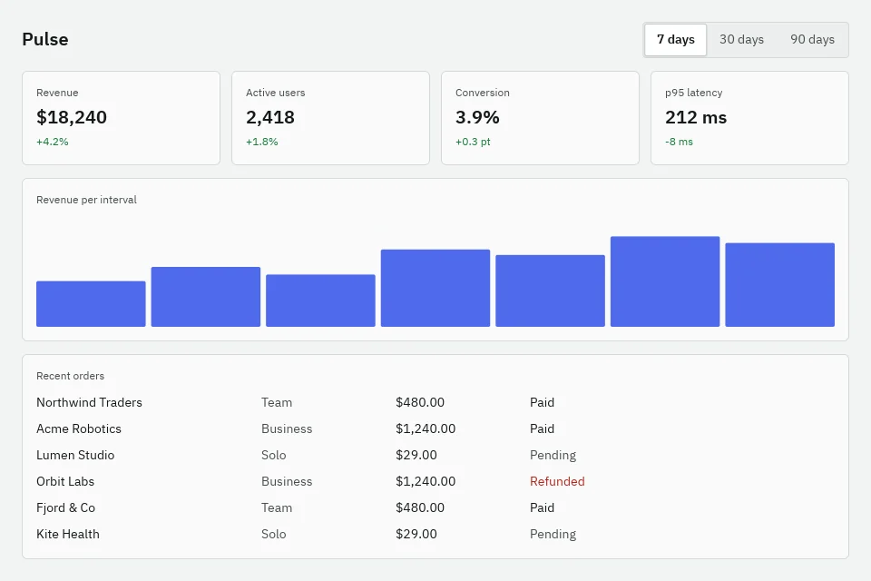
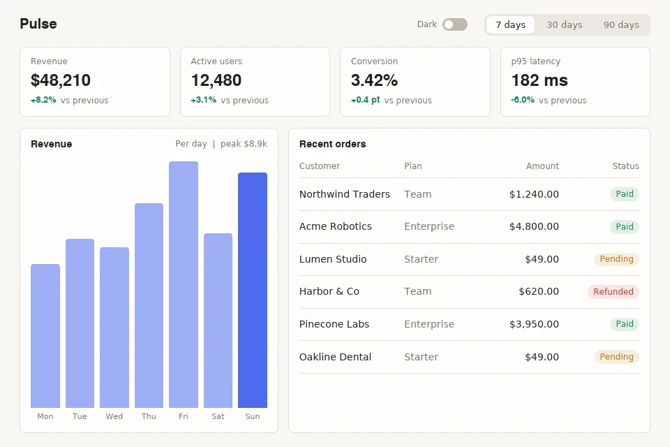
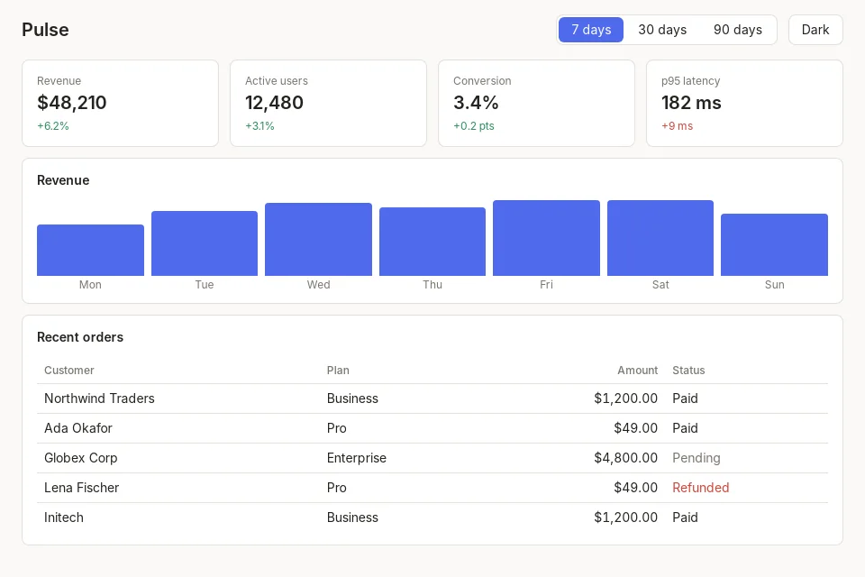

native · GPU · Rust · no webview
Desktop apps in Rust, without the ceremony.
An Alloy app is a state struct and a view function. Every pixel is drawn by Alloy's own renderer, and the app shell is as small and quiet as Tauri's. No HTML, CSS or JavaScript anywhere.
cargo install --git https://github.com/adswill/alloy-ui alloy-ui-cliuse alloy_ui::prelude::*;
fn main() {
sketch(0i64, |n| {
col![
heading("Counter"),
text(format!("{n} so far")).dim(),
row![
button("Subtract").act(|n| *n -= 1),
button("Add").primary().act(|n| *n += 1),
button("Reset").ghost().act(|n| *n = 0),
]
.align_center(),
]
.gap(14.0)
.pad(24.0)
.fill()
})
.run_sized("Counter", 360.0, 180.0)
}

Showcase
Rendered by Alloy, not by a browser.
These are screenshots of real Alloy apps drawn by the framework's own renderer: one teal or indigo accent, cool neutrals, 1px borders, small radii, and light and dark that follow the system.

comparison/alloy-rich
crates/alloy/examples/notes.rs, 26 lines
comparison/alloy-rich
crates/alloy/examples/workbench.rs
crates/alloy/examples/showcase.rsHonest comparison
The same three apps, three ways.
A notes app, a dashboard and a settings window, built from one written brief in Alloy, iced 0.14 and Tauri 2 (HTML, CSS and plain JavaScript). Lines are counted after formatting, without blanks or comments.



Read it carefully. Per app, Alloy is 2.2x to 3.8x smaller than iced, not 10x, because what is left is your own logic. The "Alloy rich" bar spends iced's line budget on finish instead (status pills, axes, sparklines, dark mode), and the lean screenshot above is plainer than the other two. Binaries measured on Linux with software rendering: Alloy 7.6 MB, iced 8.1 MB, Tauri 3.2 MB, which is smaller because it borrows the system webview. First paint was about 160 to 180 ms for Alloy and iced and about 700 ms for Tauri. The full method and caveats are in comparison/README.md.
What you write
The boring parts are already built.
Alloy ships the blocks that most apps are made of, and everything is typed Rust.
A whole notes app in 26 lines
Searchable list, editor, pin, delete with confirmation, autosave, a settings page, undo and a command palette. derive(Record) knows its fields, so tables and forms need no wiring.
use alloy_ui::prelude::*;
#[derive(Record, Clone, Default)]
struct Note {
#[form(long)]
body: String,
pinned: bool,
#[form(skip)]
edited: Stamp,
}
fn main() {
app("Notes")
.page("Notes", || {
let notes = store(|| {
Note::rows([
vals!["Welcome\nEverything you type is saved as you go.", false],
vals!["Shopping\nCoffee, oat milk, lemons", false],
vals!["Ideas\nA native notes app with no webview", false],
])
});
browse_of(¬es)
.foot(|n| caption(format!("{} words", n.body.split_whitespace().count())))
})
.shortcut_as("mod+s", "Save", || toast("Saved"))
.command("Export as Markdown", || toast("Exported 3 notes"))
.undoable()
.theme_page()
.persist()
.run()
}
Async without a runtime to set up
An async fn becomes a screen with Loading, an error card with Retry and a Refresh button. You write only the success view.
use alloy_ui::prelude::*;
async fn load_releases() -> Result<Vec<String>, String> {
sleep(secs(0.4)).await; // stands in for a network call
Ok(vec!["0.4.0".into(), "0.3.2".into()])
}
fn main() {
sketch((), |_| {
resource(load_releases).page("Releases", |v| {
col(v.iter().map(|r| text(format!("alloy {r}")))).gap(6.0)
})
})
.run("Releases")
}
Test the screen, not the internals
The same runtime runs headless with scripted input. Click by visible text, type, press chords, assert on what is drawn, or save a PNG for a golden image. No window and no GPU needed.
#[test]
fn adding_counts() {
let mut ui = Harness::new(sketch(0i64, view), 360.0, 200.0);
ui.click("Add").click("Add");
assert!(ui.has_text("2 so far"));
ui.save_png("target/counter.png"); // CPU-rendered, no GPU
}
Tauri's shell, without the web
Ship it like a real app.
Windows, menus, tray, dialogs, clipboard and shortcuts are in the box. alloy bundle builds a native package, and a capability file denies everything the app does not declare.
$ alloy new hello --identifier com.example.hello
$ cd hello && alloy dev # validates capabilities, runs a debug build
$ alloy bundle --format deb,rpm # pure-Rust packagers, nothing to install
$ alloy bundle --format app,dmg # macOS bundles (built on macOS)
$ alloy bundle --format exe,msi # Windows bundles
Where it stands
What has actually run.
Alloy is young. This table only calls something verified when a test or a run has really happened.
| Platform | Status | Detail |
|---|---|---|
| Linux (X11, Wayland) | run locally | Tests, headless rendering, bundling (.deb, .rpm) and AT-SPI accessibility were run on Linux. |
| Windows | CI passed once | fmt, build, clippy and tests passed in CI. The app has not yet been run on a real Windows desktop. |
| macOS | compiles | The code builds, but CI has not run it. Treat it as unverified. |
GitHub Actions is currently held up by an account billing limit, so the full matrix has not completed. Performance numbers are software-rendered Linux numbers, not GPU results. See BENCHMARKS.md.
Start
Three commands to a window.
Alloy is not on crates.io yet, so install from the repository.
$ cargo install --git https://github.com/adswill/alloy-ui alloy-ui-cli
$ alloy new hello --identifier com.example.hello
$ cd hello && alloy dev